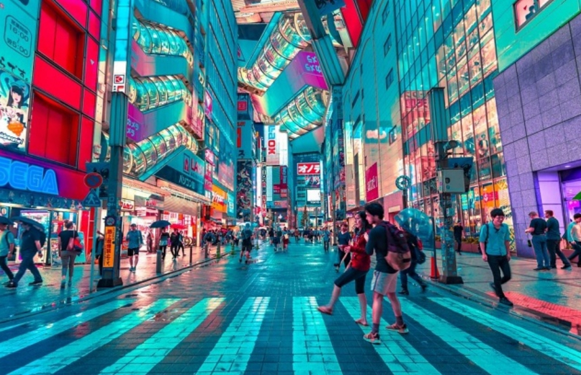
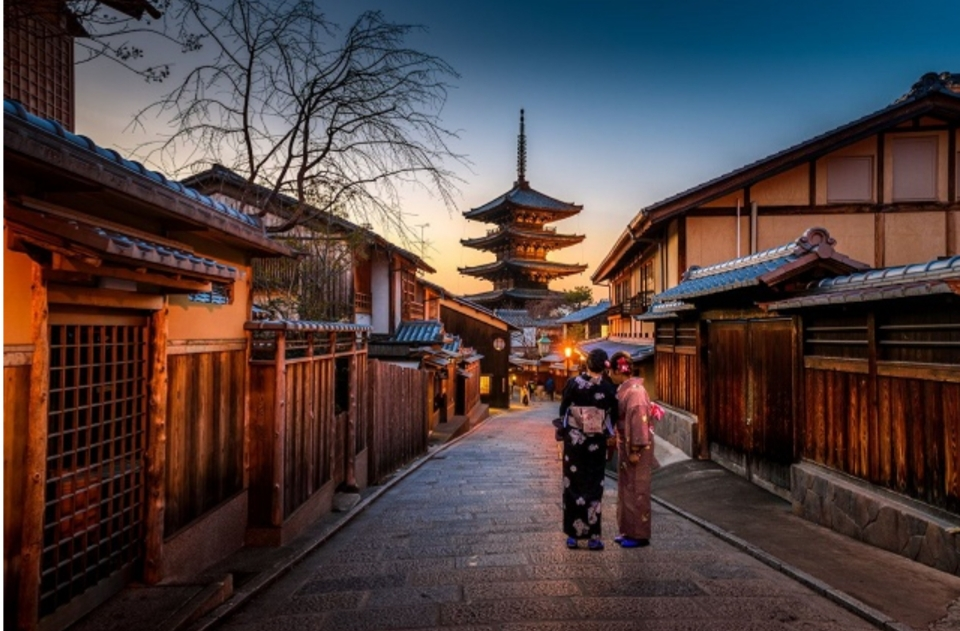
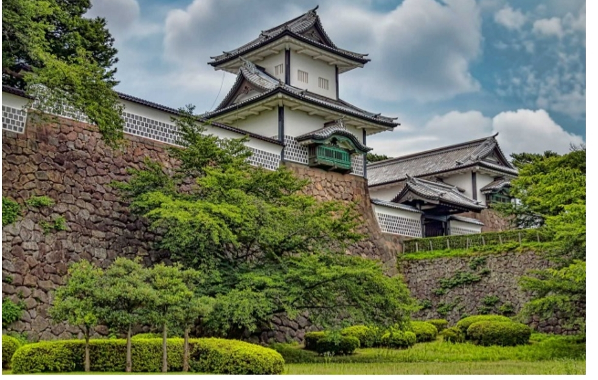
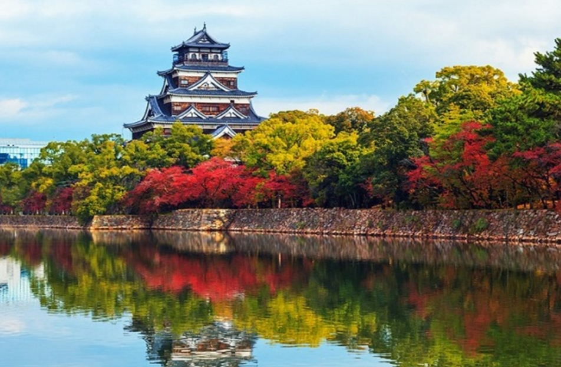
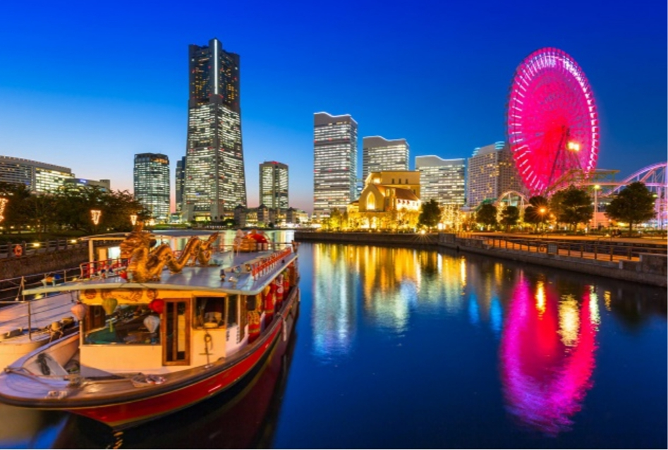
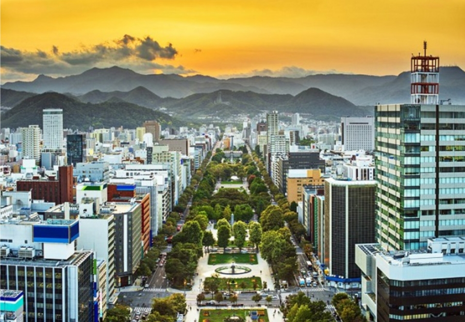

map of japan


tokyo is one of the most prices japanese cities in the world.
it is the japanese capital,and is important tourist destination ,which recieves millions of visitors annually from different parts,to explor its cultural and uniqe cultural landscrapers.
Tokyo allows you to do many great recreational activities, including strolling safely the cobblestone streets, exploring the city's historical remains and ancient atmosphere, food stalls and much more.
As well as pop culture and international fashion.
Tokyo is also home to far more Michelin-starred establishments than anywhere in the world, offering gourmet food, shopping malls and much more.

A city blooming in the most beautiful city in the world. One of the most beautiful tourist destinations in Japan, for Japan.
The recreational activities that have been completed in tourism vary, as there are its attractions, where there are its attractions, where there are more than two thousand religious temples and shrines.
You can also wander the winding, cobbled alleys, see traditional cafes, and world-class restaurants.
You can also enjoy watching Japanese Japanese landscapes.

Located on the Sea of Japan, Kanazawa is a beautiful city with its beautiful natural landscapes that attract many visitors to relax and unwind in the quiet city atmosphere.
Great view on strolling the walkway in amazingly preserved old quarters like the ancient samurai.
Perhaps the most favorite visitor area in the city is Kenroku-en Castle, which is surrounded by idyllic gardens, all of the above in addition to the charming landscape.
 Hiroshima was rebuilt after it was completely destroyed by the atomic bomb in 1945, and is now a bustling modern city, one of Japan's top tourist attractions. Hiroshima allows tourists to practice all kinds of recreational activities, including enjoying visiting attractions from museums, parks and amusement parks, such as the Peace Memorial Park, seeing the ruins of Genbaku Dome “Nuclear Bomb Dome”, Tsukushima Shrine, and Hiroshima Castle, as well as going to the islands near the city and the most famous of them.” Miyajima Island.

Yokohama is the second largest city in Japan, located on Tokyo Bay. It is a coastal city and a global tourism destination worth exploring and visiting for its super clean and beauty.
Yokohama is an important major port in Japan.
The city is known for its diversity of architecture, as well as delicious food from around the world.
You can visit theme parks such as Yamashita and Sanken, Chinatown, and don't miss shopping in the country's various malls and buying wonderful souvenirs.

The great city of Sapporo is the capital of the island of Hokkaido, and it is one of the important tourist attractions in, as it includes many tourist attractions, and allows its visitors to practice many recreational activities throughout the year.
You can enjoy many exciting winter sports such as snowboarding, as well as enjoyable summer activities such as attending many festivals, perhaps the most important of which is the famous Snow Sapporo Festival, which is attended by thousands of tourists to see the huge statues.
You can also go to the mountains, hills, hot springs on the island, huge shopping malls, great restaurants, exciting nightlife, and much more.